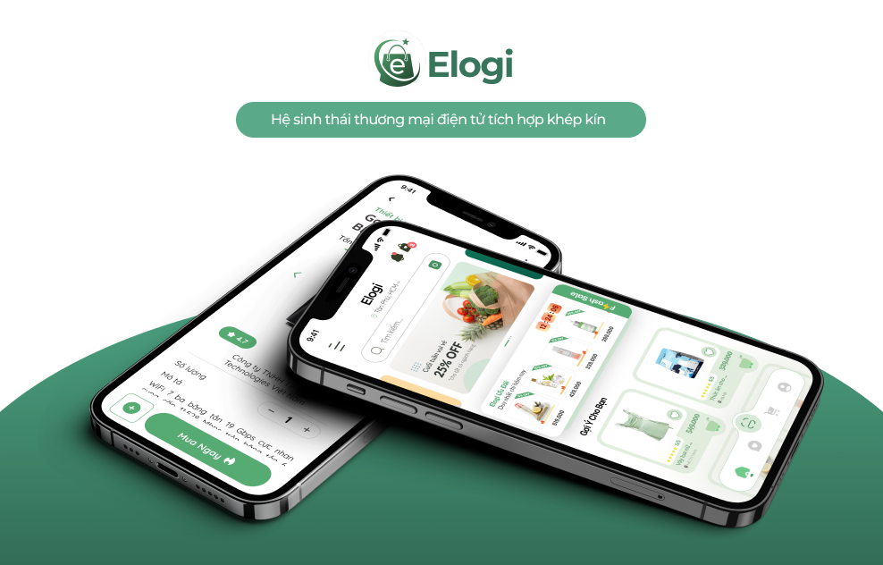

The problem
Enterprise data, scattered across tools.
Operations and leadership teams were switching between spreadsheets, BI tools and Slack threads just to understand “what happened yesterday”. Existing dashboards were dense, inconsistent and required an analyst to interpret every spike.
- Slow, manual reporting cycles and duplicate work.
- KPIs defined differently by each team, creating misalignment.
- No single view that combined product, revenue and support metrics.
Goals
Design principles
- One glance should answer “Are we healthy today?”.
- Make trends and anomalies more obvious than numbers.
- Support both high‑level execs and deep‑dive analysts.
- Scale to new widgets, metrics and teams without redesigning the core layout.
User research
Listening to real workflows.
I interviewed 6 stakeholders – an operations manager, product lead, data analyst and 3 team leads – to understand how they currently monitored KPIs and made decisions.
- Mapped daily/weekly reporting rituals and recurring questions.
- Shadowed how they navigated existing tools during a live incident.
- Identified the “3 critical numbers” they checked every morning.
Insights
From noise to narratives.
The biggest gap wasn’t data – it was storytelling. Users wanted a dashboard that framed metrics as narratives: “We’re trending above target”, “Churn risk is spiking in EU”, “Support backlog is improving”.
- Surface exceptions and anomalies upfront instead of burying them in charts.
- Keep layout stable; change the data, not the interface.
- Provide light‑weight annotations to explain why a chart changed.
Design process
From wireframes to high‑fidelity UI.


High‑fidelity UI
Clarity, contrast and rhythm.
The final UI uses a dark spacious canvas with focused cards, allowing charts and KPI chips to breathe. Micro‑interactions – subtle hover states, card shadows and transitions – help guide attention without feeling flashy.
Outcomes
Business impact
- Teams consolidated 4 reporting dashboards into a single shared workspace.
- Leadership reported faster weekly decision‑making with less back‑and‑forth.
- Analysts spent more time on insights, less on screenshotting and formatting slides.
Have a complex product to explain?
I love turning dense data and edge cases into calm, confident interfaces. Let’s design your next dashboard or product workflow.